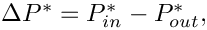
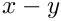
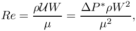
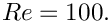
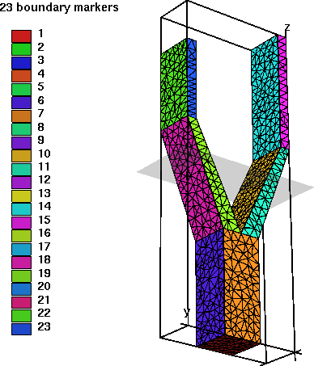
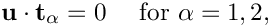
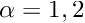
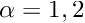

This tutorial provides another demonstration of how to use 3D unstructured meshes for the solution of fluid flow problems. (The main tetgen tutorial already contains a 3D unstructured fluid example.)
The specific problem considered here also serves as a "warm-up problem" for the corresponding fluid-structure interaction problem in which the domain boundary is replaced by an elastic vessel.
The problem
Here is a sketch of the problem: Flow is driven through a 3D rigid vessel made of three rectangular tubes that meet at a common junction. The flow is driven by a prescribed pressure drop between the upstream and the two downstream ends,  and we assume/impose parallel in- and outflow in the inlet and outlet cross-sections, all of which are parallel to  coordinate plane.
We non-dimensionalise all lengths on the half-width,  , of the square main vessel and use the overall pressure drop,
, of the square main vessel and use the overall pressure drop,  to define the (viscous) velocity scale
to define the (viscous) velocity scale
![\[ {\cal U} = \frac{\Delta P^*\ W}{\mu}. \]](form_4.png)
With this choice the Reynolds number becomes

and we choose to drive the flow with a dimensionless pressure drop of  An increase in Reynolds number may therefore be interpreted as in increase in the applied (dimensional) pressure drop along the vessel.
An increase in Reynolds number may therefore be interpreted as in increase in the applied (dimensional) pressure drop along the vessel.
3D unstructured mesh generation
We use Hang Si's open-source mesh generator tetgen to generate the unstructured tetrahedral mesh "offline". We then process the output files produced by
tetgen to generate an unstructured oomph-lib mesh.
Tetgen requires the specification of the domain boundaries via so-called facets – planar surface patches that are bounded by closed polygonal line segments. In our simple geometry each of the three tube segments has four external faces. Together with the three in- and outflow sections this results in a total of 15 facets.
The 15 facets are defined in a *.poly file that specifies the position of the vertices, and identifies the facets via a "face list" that establishes their bounding vertices. The well-annotated *.poly file for this problem is located at:
We refer to the tetgen webpages and oomph-lib's own tetgen tutorial for further details on how to create *.poly files.
Here is a plot of the domain specified by fsi_bifurcation_fluid.poly. The plot was created using tetview which is distributed with tetgen .
Note that we have deliberately assigned a different boundary ID to each facet. This will make the assignment of the boundary condition somewhat tedious as the domain boundaries of interest tend to be represented by multiple, separate mesh boundaries. However, the assignment of distinct boundary IDs for the different facets is essential for the automatic generation of boundary coordinates in the corresponding fluid-structure interaction problem and is therefore strongly recommended.
Tetgen generates an unstructured volumetric mesh from the information contained in the *.poly file and outputs the mesh's nodes, elements and faces in the files
- demo_drivers/navier_stokes/unstructured_three_d_fluid/fsi_bifurcation_fluid.1.node
- demo_drivers/navier_stokes/unstructured_three_d_fluid/fsi_bifurcation_fluid.1.ele
- demo_drivers/navier_stokes/unstructured_three_d_fluid/fsi_bifurcation_fluid.1.face
These files can be used as input to oomph-lib's TetgenMesh class, using the procedure discussed in another tutorial.
The figure below shows a tetview plot of the mesh, created with a volume constraint of 0.2 (i.e. the maximum volume of each tetrahedron is guaranteed to be less than 0.2 units), using the command
Note how tetgen has subdivided each of the 15 original facets specified in the *.poly file into a surface triangulation. The nodes and tetrahedral elements that are located on (or adjacent to) the 15 original facets inherit their boundary IDs. This is important when we assign the boundary conditions for the actual computation.
Results
The plot shown below illustrates the flow field (streamribbons coloured by pressure contours) for a Reynolds number of  The transparent faces show the boundaries of the fluid elements and illustrate that the mesh is very coarse. As a result, the flow is clearly under-resolved, particularly near the two outflow cross-sections where the imposition of parallel outflow forces the fluid velocity to re-adjust rapidly as it approaches the outlet. (See Creating a finer mesh and applying more appropriate outflow boundary conditions in Comments and Exercises for a more detailed discussion of this aspect.)

Problem parameters
As usual we define the various problem parameters in a global namespace. We define the Reynolds number and specify the tractions to be applied at the in- and outflow cross-sections:
The driver code
We specify an output directory, create the Problem object using ten-node tetrahedral Taylor-Hood elements, and output the initial guess for the flow field:
Next we perform a parameter study in which we increase the Reynolds number of the flow – corresponding to an increase in the applied pressure drop. (As usual we perform a smaller number of steps in a validation run – performed when the code is run with nonzero number of command-line arguments.)
The Problem class
The Problem class has the usual member functions and provides explicit storage for the fluid mesh and the meshes containing the FaceElements that apply the traction conditions at the in- and outflow boundaries. We also provide storage for the IDs of the mesh boundaries that constitute the in- and outflow boundaries to facilitate the application of the boundary conditions.
The Problem constructor
We start by building the fluid mesh, using the files created by tetgen :
(We refer to the subsection Splitting corner elements in unstructured meshes to avoid locking in the section Comments and Exercises for a discussion of the split_corner_elements flag).
Next, we set up the boundary lookup schemes that determine which elements are located next to which domain boundaries, and specify the IDs of the mesh boundaries that coincide with the in- and outflow cross-sections. Note that this information reflects the specification of the boundary IDs in the tetgen *.poly file.
Next we apply the boundary conditions. We impose parallel in- and outflow by pinning the transverse velocities at all nodes that are located on the in- and outflow boundaries, identifying the nodes via the boundary IDs just set up. We use the boolean map done to indicate which boundaries we have visited already.
The nodes on all other boundaries (i.e. the ones for which done[b] is still false) are subjected to no-slip conditions by pinning all three velocity components. (This approach facilitates the "extension" of the mesh discussed in section Creating a finer mesh and applying more appropriate outflow boundary conditions, but we note that, in general, keeping track of the boundary IDs associated with each physical boundary must be done "by hand". )
We complete the build of the Navier-Stokes elements by specifying the pointer to the Reynolds number,
and attach the FaceElements that apply the imposed in- and outflow tractions to the appropriate faces of the elements on the in- and outflow boundaries:
Finally, we combine the various sub-meshes to a combined global mesh and assign the equation numbers.
Creating the fluid traction elements
The helper function create_fluid_traction_elements() loops over the bulk elements that are adjacent to the in- and outflow cross-sections and attaches NavierStokesTractionElements to the relevant faces. We store pointers to the newly-created elements in the appropriate meshes, and pass pointers to the functions that specify the imposed traction to the elements.
Post-processing
The post-processing routine outputs the flow field.
Comments and Exercises
Splitting corner elements in unstructured meshes to avoid locking
Meshes generated by tetgen tend to be of very high quality and can usually be used without further modification. However, in Navier-Stokes computations (or other problems in which the elements have to satisfy an LBB-type stability constraint) problems can arise if too many of an element's nodes are constrained by boundary conditions, causing the discretisation to "lock". This tends to happen when three of the element's four faces are located on domain boundaries, as in the case of the top-left and bottom-left elements in the inflow cross-section shown below.
Ten-noded tetrahedral elements have nodes at their vertices and on their edges only. Therefore all the nodes in these particular two elements are located on domain boundaries. Furthermore, only one of these (the node halfway along the edge that traverses the inflow cross-section) is unconstrained; the imposition of parallel flow at the inflow face only constrains the node's transverse velocities. Thus, both elements have a single velocity degree of freedom (the axial velocity at the node on the inflow face) but they retain their four pressure degrees of freedom (the pressures at their vertices). This does not necessarily over-constrain the problem (and in the present problem it does not) – "locking", due to the presence of too many pressure degrees of freedom, arises at the level of the global, fully-assembled problem, not on an element-by-element basis. However, the presence of such elements makes the occurrence of locking more likely and we have occasionally come across examples in which locking does occur. The remedy would be to pin exactly the required number of superfluous pressure degrees of freedom (no more and no fewer!) to "unlock" the problem. However, the diagnosis of the problem is as difficult as its practical resolution: How do we determine in advance if a problem will lock and, if so, which pressures should be pinned, etc.?
To avoid the problem altogether, oomph-lib's TetgenMesh constructor provides an optional boolean flag, split_corner_elements. If this flag is set to true, the mesh constructor identifies all elements in which at least three faces are located on mesh boundaries. These elements are then split into four smaller ones, using a localised refinement as shown in this plot:

Note that the localised refinement leads to a small deterioration in the element quality but this is usually acceptable. If you are concerned about this aspect, allow the splitting of corner elements only if locking actually occurs (see below), or try to generate a different tetgen mesh that does not suffer from this problem, e.g. by imposing a different volume constraint.
- If a solution can be computed (using a direct solver) the occurrence of "locking" is easy to spot: Typically the pressure in over-constrained elements becomes extremely large while the rest of the flow field looks fairly normal. Iterative solvers may fail to converge. If you suspect that locking may have occurred, try re-computing the solution on a mesh with the
split_corner_elementsflag set totrue.
Creating a finer mesh and applying more appropriate outflow boundary conditions
The flow field shown in the Results section is clearly under-resolved and a much finer mesh would have to be used to fully resolve all flow features. The problem is particularly bad because we have imposed parallel outflow (i.e. flow in the  -direction) at the ends of tubes whose axes are not aligned with the -axis. This creates thin outflow boundary layers within which the flow is forced to change direction as it exits the tubes. These observations motivate the following exercises that allow you to explore unstructured mesh generation.
-direction) at the ends of tubes whose axes are not aligned with the -axis. This creates thin outflow boundary layers within which the flow is forced to change direction as it exits the tubes. These observations motivate the following exercises that allow you to explore unstructured mesh generation.
- Exercise 1: Refining the mesh
Create a finer mesh by specifying a smaller volume constraint for tetgen. For instance, using
tetgen -a0.02 fsi_bifurcation_fluid.poly
will generate a much finer mesh, containing 3345 tets. Note that the driver code can remain completely unchanged.
- Exercise 2: Add straight outflow vessels
The imposition of parallel flow at the outlet boundaries would be less problematic if at least the final part of the two outflow tubes was aligned with the-axis. Modify the file fsi_bifurcation_fluid.polyso that two straight vessel segments, parallel to the-axis, are added to the mesh. The modification to the *.polyfile should be straightforward. You have to add eight additional vertices and faces, and re-define the two outflow faces.
Here is a sample plot of a modified mesh in which two additional straight segments of different lengths have been attached to the downstream tubes. Note that the enumeration of the in- and outflow boundaries was retained, allowing the mesh to be used with the same driver code.
Plot of the mesh, with two straight segments added to the outflow branches.
The modified mesh was created with the filefsi_bifurcation_fluid_with_extended_tubes.polywhich you may wish to consult. However, we do encourage you to do this exercise by yourself first, in order to familiarise yourself withtetgen– you will notice thattetgenis not very forgiving (or verbose) when it encounters errors in the*.polyfile.
- Exercise 3: Use Lagrange multipliers to allow parallel outflow in cross-sections that are not aligned with the coordinate axes.
The main (only?) reason why we tend to impose parallel in- or outflow in cross-sections that are aligned with the Cartesian coordinate planes is, of course, that such boundary conditions are easiest to apply in a discretisation that is based on the Cartesian form of the Navier-Stokes equations. What if we wished to impose parallel outflow from cross-sections that are not aligned with such planes? The proper way to do this is to use Lagrange multipliers to enforce the two constraints
where (for ) are the two tangent vectors spanning the in- or outflow cross-sections. The imposition of these constraints requires two Lagrange multiplier fields, defined in the in-/outflow cross-sections. Physically, these Lagrange multipliers act as tangential tractions that enforce the parallel in- or outflow. The Lagrange multipliers introduce additional degrees of freedom into the problem and an implementation can be based on an extension of the existing
(for ) are the two tangent vectors spanning the in- or outflow cross-sections. The imposition of these constraints requires two Lagrange multiplier fields, defined in the in-/outflow cross-sections. Physically, these Lagrange multipliers act as tangential tractions that enforce the parallel in- or outflow. The Lagrange multipliers introduce additional degrees of freedom into the problem and an implementation can be based on an extension of the existing NavierStokesTractionElements, using a technique similar to that used to enforce prescribed boundary displacements in solid mechanics problems, discussed in another tutorial. Note that, compared to the previous two exercises, this one is not entirely trivial. An implementation is provided inImposeParallelOutflowElement, but, as always, it is more instructive to try to write it yourself!
Source files for this tutorial
- The source files for this tutorial are located in the directory:
demo_drivers/navier_stokes/unstructured_three_d_fluid/
- The driver code is:
demo_drivers/navier_stokes/unstructured_three_d_fluid/unstructured_three_d_fluid.cc
PDF file
A pdf version of this document is available.